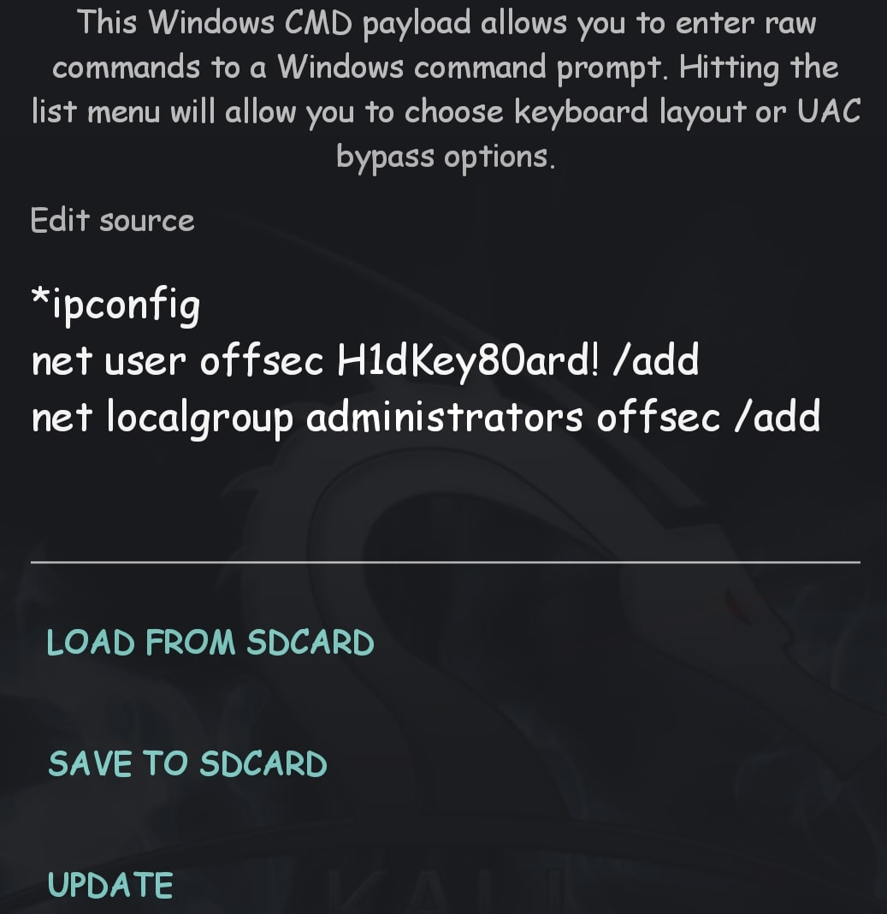

HID атаки
Информация
Общие сведенья
HID атака - это атака заставляет наш компьютер принимать наше утройство за клавиатуры или даже мышку без всяких вопросов, данная атака универсальна для всех систем и пк!Такое устройство можно сделать как из ардруино и флешки так и с андроид девайса!
Что можно сделать с помощью этой атаки?Да все что угодно
- Стиллер
- Лоадер
- Майнер
- Грабер
- создать нового пользователя
- Кейлогер
- и т.д.
Защита: Пока что нет универсальных методов защиты, ведь это по сути клавиатура, можно установить ограничение на скорость набора и быть очень бдительным
Rucky
Приложение для RD скриптов
Rucky - обычное приложение под андроид но справляется на ура, есть русский язык возможность сохранять и подгружать скрипты!Так же в последних версиях возможно включить автозапуск!Для этого переходим в Настройки->Автозапуск по кабелю
Теперь стоит нажать кнопку Запуск, и при подключению к омпьютеру скрипт запустится!
REM - комментарий DELAY - время ожидания(милисек.) STRING - набор команды, текста, символов GUI, WINDOWS - клавиша win, можно использовать в комбинации (Пример:GUI r) Menu, app - ПКМ, F10 ALT - клавиша ALT, можно использовать в комбинации (Пример:ALT f) Ctrl, CONTROL - кнопка CTRL, можно использовать в комбинации (Пример:CTRL ESCAPE) DOWNARROW↓,DOWNLEFTARROW←,LEFTRIGHTARROW→, RIGHTUPARROW↑. Repeat - сколько раз повторить
Nethunter
HID атаки
Здесь каждая строка будет внесена в исполнитель (Win+R)!Тоесть можно добавить пользователя, сменить пароль и многое другое! Огромным плюсом есть UAC by Pass что выполняет действия от имени администратора!
Иногда на интерфейс hidg выставленны не правильные права, это легко решается любым рут проводником или треминалом.
Способ №1
Идем в root/dev/ и ищем файлы hidg, их может быть несколько, нажимаем информация о файлах и выставляем права 666
Способ №2
Заходим в терминал и даем рут права!После пишем команды cd dev
ls (смотрим название файлов)
chmod 666 <название файла>
Готово!